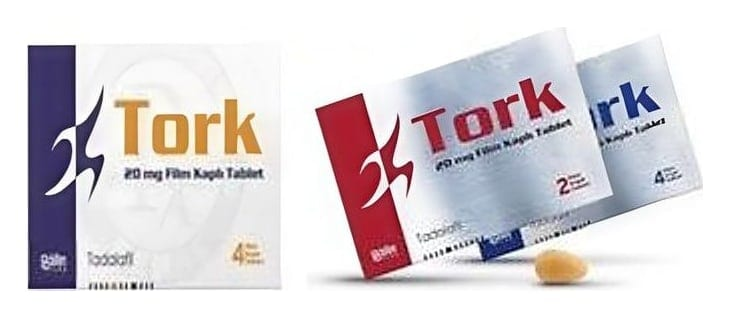

Tork 20 mg 4 Film Kaplı Tablet

Ne için kullanılır
KT · Bölüm 1TORK 20 mg, sarı renkli, badem şeklinde film kaplı tablettir. 2 ve 4 tablet içeren blister ambalajlarda piyasaya verilmektedir.
TORK, yetişkin erkeklerde erektil disfonksiyon tedavisi için kullanılan bir ilaçtır. Erektil disfonksiyon, cinsel aktivite için gerekli penis sertleşmesinin sağlanamaması veya sertliğin korunamaması durumudur. TORK’un cinsel aktivite için uygun penis sertleşmesinin sağlanması yeteneğini önemli ölçüde geliştirdiği gösterilmiştir.
TORK, tadalafil etkin maddesini içeren, fosfodiesteraz tip 5 inhibitörleri olarak adlandırılan ilaç grubuna dahildir. Cinsel uyarıyı takiben TORK, penis içerisindeki kan damarlarının gevşemesine yardımcı olarak kanın penis içerisine akışını sağlar. Bunun sonucunda peniste sertleşme gerçekleşir. Eğer sertleşme sorununuz yoksa TORK yardımcı olmayacaktır.
Sayfa 2 Cinsel uyarının olmadığı durumlarda TORK’un tek başına işe yaramayacağı önemle göz önünde bulundurulmalıdır. Bu nedenle sizin ve partnerinizin, sertleşme sorunu tedavisi için ilaç almıyormuş gibi, ön cinsel aktivitede bulunması gerekmektedir.